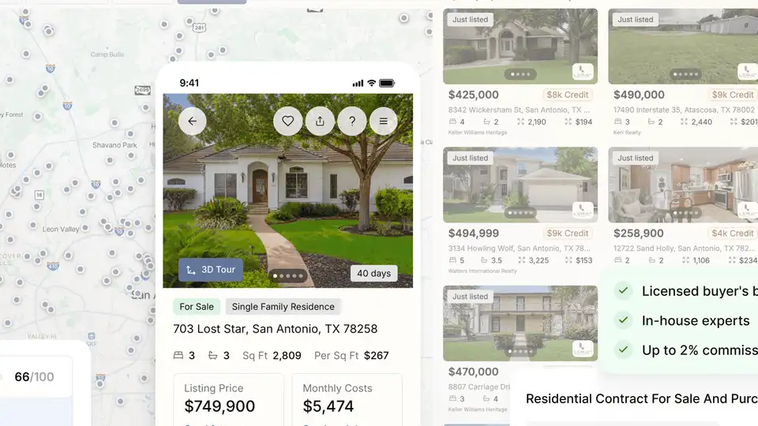
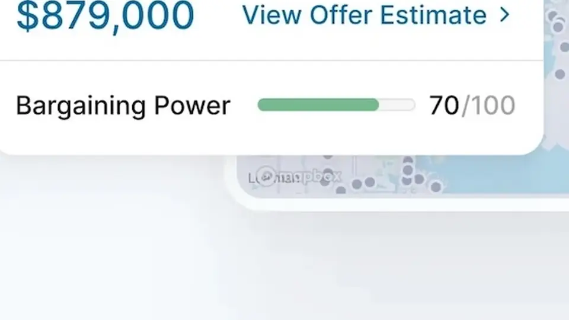

Homa raises $5M: the AI brokerage that hands 2% of the purchase price back to buyers goes statewide in California
Homa announced Thursday it has raised $5 million in seed funding led by Quiet Capital to expand its AI brokerage across California and add mortgage lending inside the app — keeping 1% of the buyer-broker commission and crediting the rest back to the buyer.
The announcement
Homa, the Austin-based AI homebuying platform, announced Thursday it has raised $5 million in seed funding led by Quiet Capital — an early investor in OpenAI and Reddit — with participation from Restive Ventures and Cambrian Ventures. The round funds a statewide California expansion and the launch of mortgage lending inside the platform.
With California live, Homa now operates in three states — Florida, Texas, and California — covering roughly 95 million Americans. The company has been live in Florida since 2025, expanded to Texas in June 2026, and soft-launched California on September 1. A mobile app is planned for later this year.
What the AI actually does
Homa is a licensed brokerage whose AI is trained on state-specific law, property data, and real-estate coursework. Before a buyer makes an offer, it provides pricing insight, disclosures, comps, risk analysis, and a bargaining-power score. Local specialists handle tours on the buyer’s schedule for a flat fee, while offers are written and negotiated by in-house brokers — one per state — each with more than a decade of experience and hundreds of closed transactions.
Co-founder and CEO Arman Javaherian, a former senior director at Zillow, framed the pitch bluntly: the traditional process “has barely changed in 40 years,” with buyers handing over “tens of thousands of dollars at the closing table for work you largely did yourself.” His co-founder, Federico Campeotto, is a computer scientist with a Ph.D. specializing in artificial intelligence.

The commission rebate is the wedge
The business model’s sharp edge is the commission split. Where a seller offers a buyer-broker commission of up to 3%, Homa keeps 1% and credits the remainder — typically around 2% of the purchase price — back to the buyer at closing. The company says credits have averaged more than $10,000 and exceeded $40,000 on higher-priced homes, and buyers can apply the credit to a rate buydown, closing costs, or the purchase price.
The new mortgage feature sharpens that wedge: buyers shop for a loan inside Homa instead of being handed off to an outside lender. With the credit and the loan in the same file, the credit can fund a rate buydown that lowers the mortgage rate by as much as 0.75%, compounding savings over the life of the loan.

Why it matters
Homa’s timing leans on two trends. First, buyer-broker commissions have faced scrutiny since the 2024 NAR settlement reshaped how commissions are negotiated, opening a lane for brokerages that compete by rebating the buyer’s share. Second, AI-assisted closings are no longer hypothetical — the company says it went viral earlier this year with what it described as the first AI closings in the U.S., and September was its strongest month to date.
Investors are buying the combination. “Homa is the only consumer company we have seen that runs both sides and hands the customer real money back,” said Michael Bloch, partner at Quiet Capital, calling the California expansion and mortgage launch an inflection point for the company. If the model holds at scale, the question for traditional brokerages isn’t whether AI can negotiate — it’s how long a 3% commission survives contact with a licensed platform that keeps only 1%.
Sources: Homa’s official announcement via Business Wire (Oct 15, 2026); HousingWire’s coverage of the round (Oct 15, 2026).